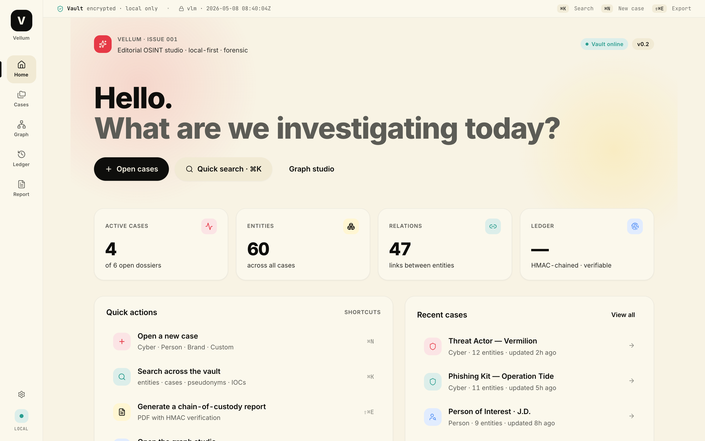
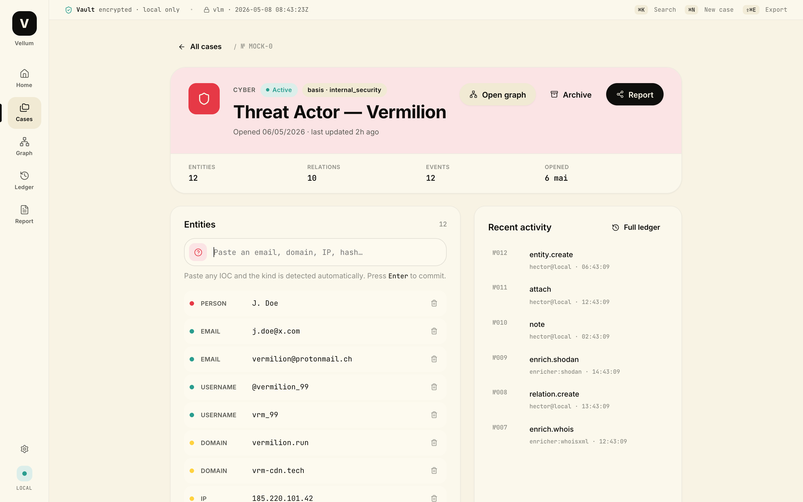
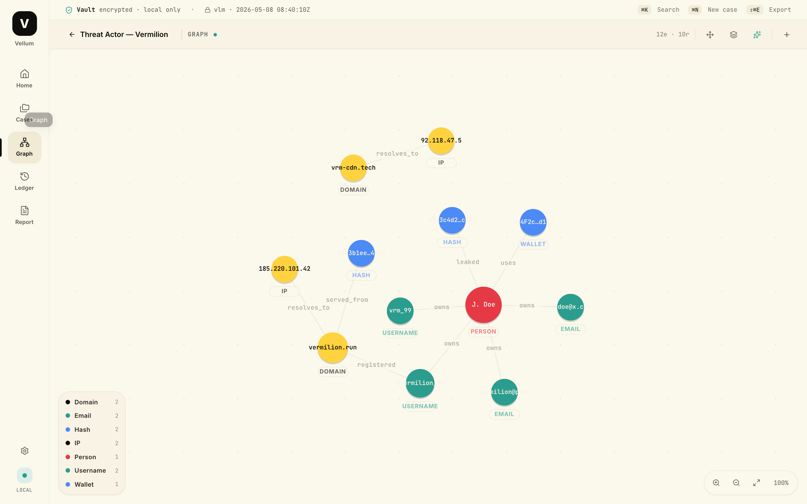
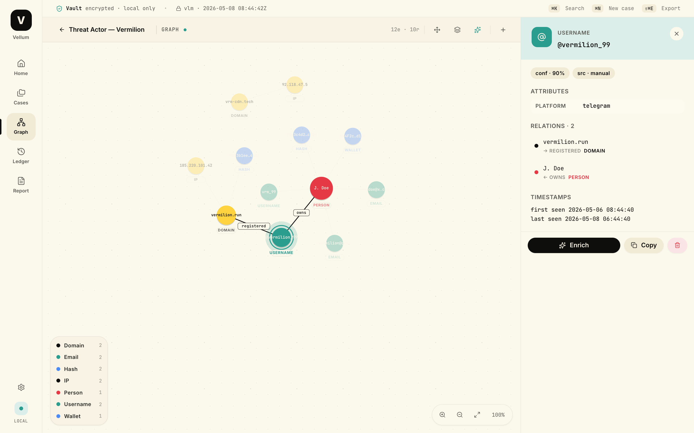
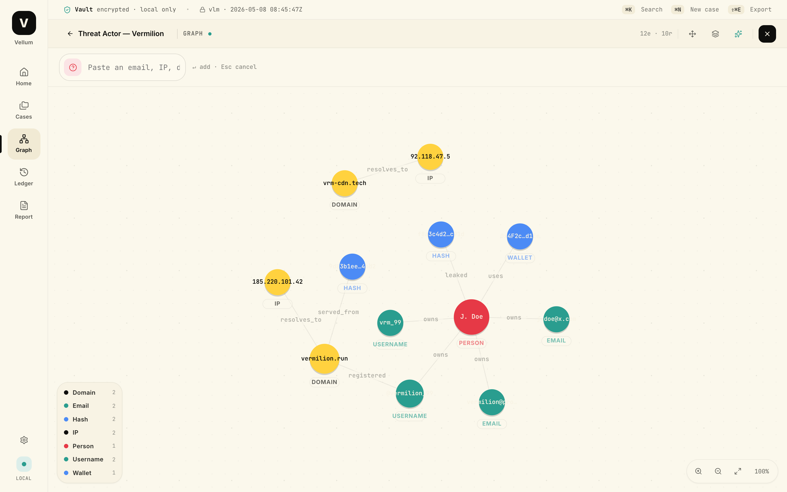
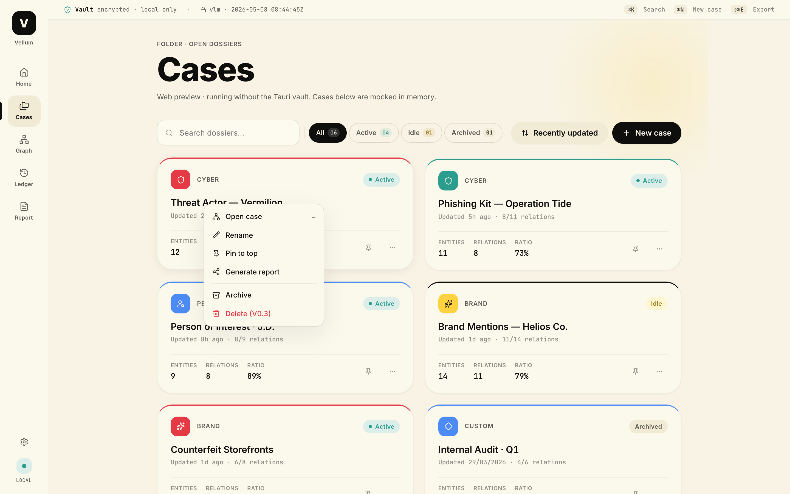
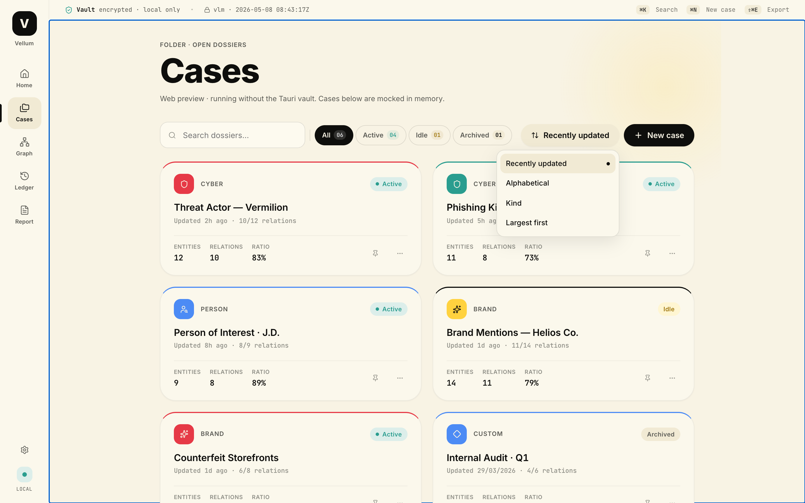
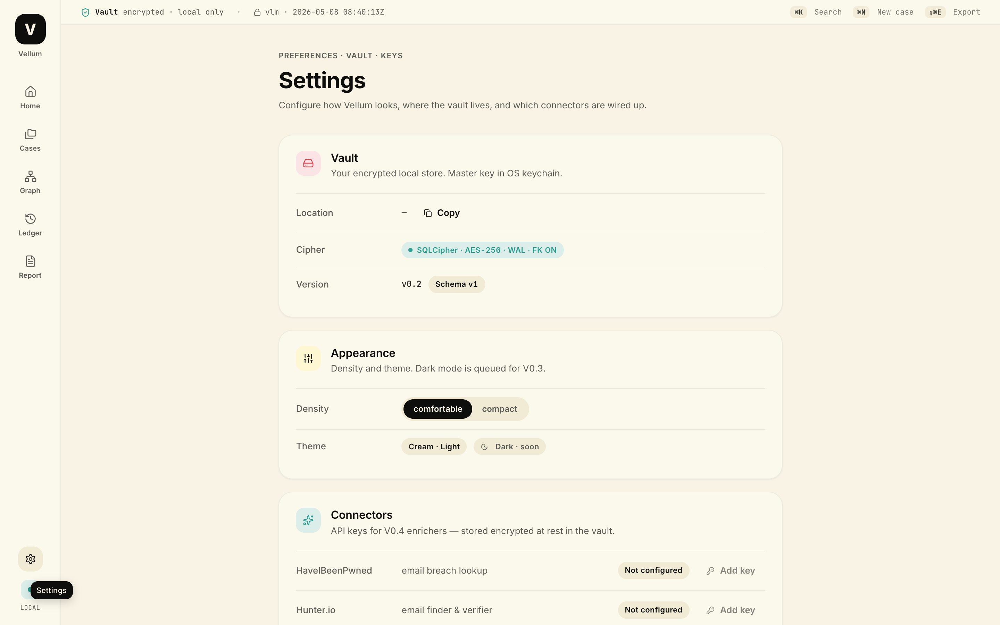

Investigation Osint
Les outils d'investigation open-source sont puissants mais rarement pensés pour ceux qui les utilisent. Interfaces austères, workflows fragmentés, données sans intégrité garantie, la communauté OSINT mérite mieux. J'ai créé Vellum pour changer ça : un outil d'investigation desktop qui place le design au même niveau que la sécurité, et qui prouve qu'un logiciel open-source peut avoir le niveau d'exigence d'un produit commercial premium.
Open-source investigation tools are powerful but rarely designed for the people who use them. Austere interfaces, fragmented workflows, data with no guaranteed integrity. The OSINT community deserves better. I created Vellum to change that: a desktop investigation tool that places design on an equal footing with security, and proves that open-source software can hold itself to the standards of a premium commercial product.




Pourquoi Vellum existe
Les solutions du marché ont deux problèmes : soit elles coûtent cher et restent peu accessibles, soit elles sont gratuites mais franchement inutilisables. La barrière technique pour construire quelque chose de mieux n'a jamais été aussi basse. Avec Figma, Notion et Claude en synchronisation directe, j'ai pu me lancer seul et itérer vite. Vellum est ma tentative de remonter les standards dans la communauté OSINT, en montrant qu'un outil souverain et rigoureux n'a pas à sacrifier l'expérience utilisateur.
Market solutions have two problems: either they're expensive and stay out of reach, or they're free but frankly unusable. The technical barrier to building something better has never been lower. With Figma, Notion and Claude working in direct sync, I was able to launch solo and iterate fast. Vellum is my attempt to raise the bar in the OSINT community, showing that a sovereign, rigorous tool doesn't have to sacrifice user experience.
C'est aussi mon projet bac à sable personnel, l'endroit où je teste de nouvelles méthodes de design en conditions réelles, sans contraintes de brief ni de client. Un espace où la curiosité prime.
It's also my personal sandbox project, the place where I test new design methods under real conditions, free from brief or client constraints. A space where curiosity comes first.
Mon approche Product Design
En tant que concepteur de ce projet open-source, j'ai voulu créer un système qui soit à la fois un outil de précision et une vitrine de design logiciel moderne.
As the designer of this open-source project, I wanted to create a system that is both a precision tool and a showcase of modern software design.
L'esthétique de la preuve The aesthetics of proof
J'ai conçu une interface "calm by design" qui s'efface devant l'enquête. L'utilisation d'une grille éditoriale et de typographies à chasse fixe (JetBrains Mono) permet de traiter des données forensiques brutes avec la clarté d'un journal de bord premium. Quand les données sont sensibles, chaque détail visuel construit ou détruit la confiance. I designed a 'calm by design' interface that steps back to let the investigation lead. Using an editorial grid and monospaced typography (JetBrains Mono) brings clarity to raw forensic data: the precision of a premium logbook. When data is sensitive, every visual detail builds or destroys trust.
Système de graphes propriétaire Proprietary graph engine
Pour garantir la fluidité de l'exploration, j'ai développé un moteur de rendu de graphe sur mesure via SVG force simulation. Cela m'a permis de contrôler précisément l'expérience utilisateur, des interactions de zoom jusqu'à la hiérarchie visuelle des hubs, sans dépendre de librairies tierces trop lourdes. Un choix d'exigence autant que de performance. To guarantee smooth exploration, I developed a custom graph rendering engine via SVG force simulation. This let me precisely control the user experience, from zoom interactions to the visual hierarchy of hubs, without relying on heavy third-party libraries. A choice of rigour as much as performance.
Accessibilité et vélocité Accessibility & velocity
J'ai pensé l'UX pour les power users. Le workflow est entièrement optimisé pour le clavier via une Command Palette (⌘K), permettant de pivoter entre le graphe, la timeline et le Report Composer sans jamais lever les mains des touches. Sur un outil d'investigation, chaque friction coûte du temps et de la concentration. I designed the UX for power users. The workflow is fully keyboard-optimised via a Command Palette (⌘K), enabling seamless switching between the graph, timeline and Report Composer without ever lifting your hands from the keys. On an investigation tool, every friction costs time and focus.
Design pour la confiance Design for trust
En open-source, la transparence est reine. J'ai traduit des concepts cryptographiques complexes comme la chaîne HMAC en éléments d'interface tangibles et compréhensibles, renforçant la crédibilité des rapports exportés. L'intégrité des données est garantie par un registre immuable chaîné et un chiffrement local complet, et l'interface le dit clairement, sans jargon. In open source, transparency is paramount. I translated complex cryptographic concepts such as the HMAC chain into tangible, understandable interface elements, reinforcing the credibility of exported reports. Data integrity is guaranteed by an immutable chained ledger and full local encryption, and the interface states it clearly, without jargon.







